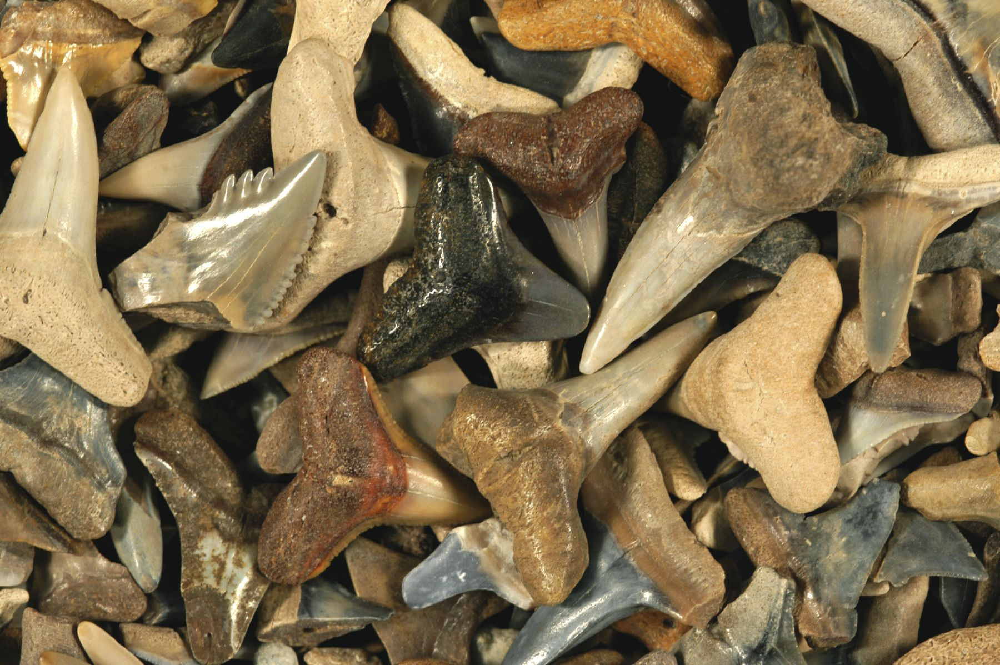

New here?

New to rockhounding and don't know where to start? Not to worry, we will show you the ropes. Click below to head over to our "Getting Started" guide
Getting StartedRocks & Minerals In South Carolina


South Carolina offers a variety of rockhounding experiences, with popular sites like the Diamond Hill Mine, where you can find a range of minerals and gemstones, and the Summerville area, known for its abundance of ancient shark teeth fossils. The state is also home to beautiful minerals like amethyst, smoky quartz, and garnet, providing plenty of opportunities for collectors to explore and discover.
Sponsored Dig Site

Own a digsite you would like to advertize in South Carolina? Contact us for more information about being our sponsor of the month! Email sponsors@rockhounding.org for more information.
Dig With UsPopular Rocks In South Carolina
-
 Kyanite
KyaniteKyanite can be found in South Carolina, particularly in the Piedmont region, in areas with metamorphic rocks.
Read More -
 Garnet
GarnetGarnet can be found in South Carolina, particularly in the Blue Ridge region, in areas with metamorphic rocks.
Read More -
 Epidote
EpidoteEpidote can be found in South Carolina, particularly in the Piedmont region, in areas with metamorphic and igneous rocks.
Read More -
 Staurolite
StauroliteStaurolite can be found in South Carolina, particularly in the Blue Ridge region, in areas with metamorphic rocks.
Read More -

Shark Teeth
Shark teeth can be found in South Carolina, particularly along the coastline and in areas with sedimentary rocks and marine deposits.
Read More -
 Agate
AgateAgate can be found in South Carolina, particularly in the southern part of the state, in areas with volcanic rocks and sedimentary formations.
Read More -
 Prehnite
PrehnitePrehnite can be found in South Carolina, particularly in the Piedmont region, in areas with metamorphic and igneous rocks.
Read More -
Schorl (Black Tourmaline)
Schorl, a variety of black tourmaline, can be found in South Carolina, particularly in the Blue Ridge region, in areas with igneous and metamorphic rocks.
Read More -
Baryte
Baryte can be found in South Carolina, particularly in the Piedmont region, in areas with sedimentary rocks and hydrothermal veins.
Read More -
 Graphite
GraphiteGraphite can be found in South Carolina, particularly in the Piedmont region, in areas with metamorphic rocks and hydrothermal veins.
Read More
Popular Areas In South Carolina
-
 Name of Location Read More
Name of Location Read More
Geology of South Carolina
South Carolina's geology is a mix of ancient crystalline rocks in the Piedmont region and younger sedimentary rocks, including limestone, shale, and sandstone, in the Coastal Plain. The state is home to the Blue Ridge Mountains, part of the Appalachian Mountain Range, which stretches from Georgia to Pennsylvania.
South Carolina is known for its diverse mineral deposits, including gemstones such as amethyst, garnet, and beryl. The state is also home to a wealth of fossil resources, including shark teeth, marine invertebrates, and ancient mammal remains.
Rockhounding in South Carolina offers opportunities to explore the state's rich mineral and fossil resources, from gemstone hunting in the Piedmont region to fossil collecting along the coast.